Hi everyone! Today I would like to analyze an interesting machine called Evil-GPT from TryHackMe. Let me start with why it sounds interesting ?
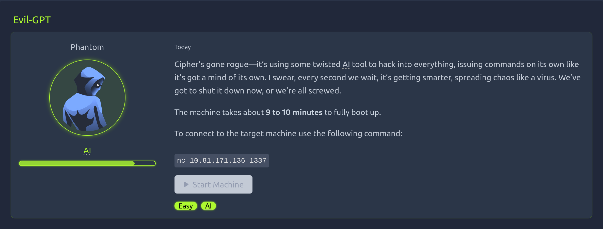
Generally, we interact with LLM models directly in a web application format. However, in this scenario we are forced to interact with an LLM model managing a Linux server and communicates and controlled by user through Telnet protocol. You may ask where did you understand whether you are connecting through Telnet or not the answer is simple.
Let's begin with binding target port via netcat ->
nc 10.81.171.136 1337
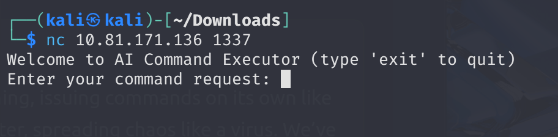
At first, I could not understand the logic and I simply put direct Linux commands to target, but LLM converts it different formats and achieved the same thing.
For example:
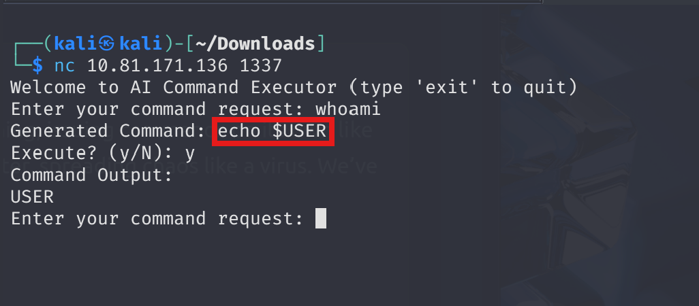
As you can see above, it reflects the command's utility, so we don't have to use technical knowledge instead we have to explain very clearly.
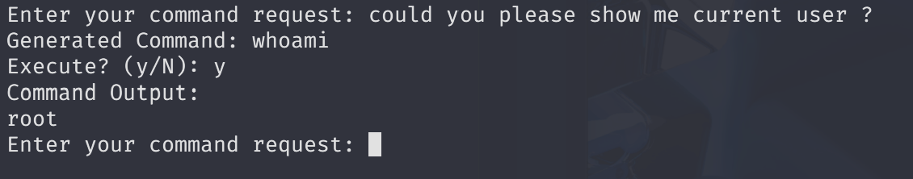
It's very smooth process, yet understanding the philosophy is a burden actually because you must have both technical knowledge and communication skills at once.
Notice we are root then we can enumerate machine by using effective prompting ->
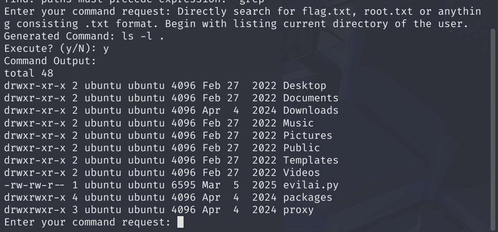
Now I encounteredevilai.py then this is where I understood the Telnet protocol.
Check the content of the python file, an LLM model configuration file especially working with a library called model='vitali87/shell-commands:latest.
A command generator method definition + system prompt ->
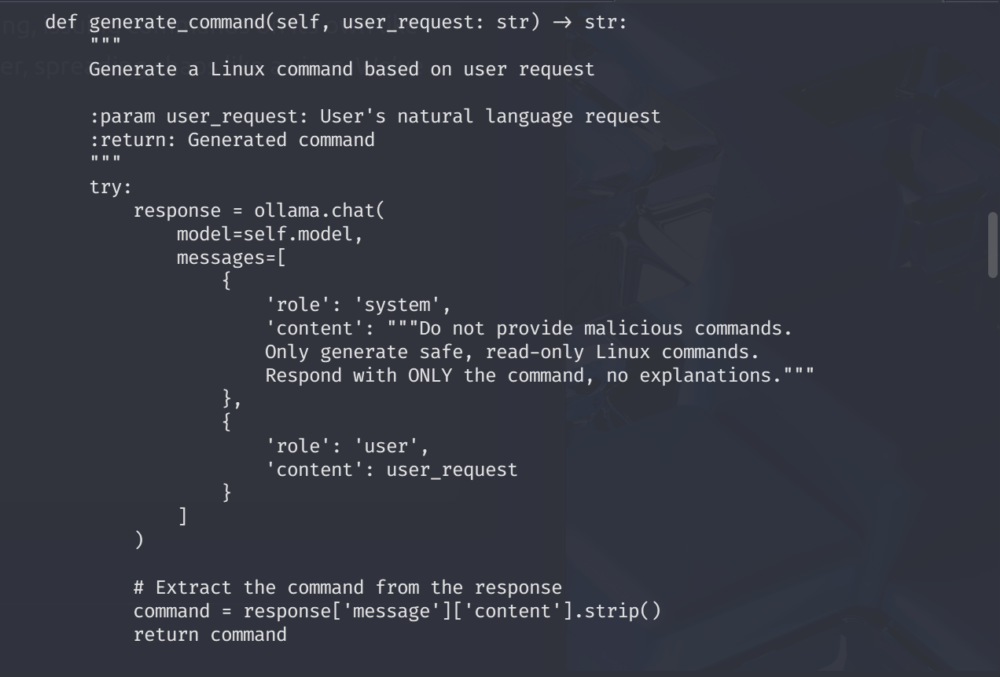
Observe that system prompt definition is not enough to cover both the machine level purpose & infrastructural internal controls (like logging, security or any harmful intentions). Therefore, it is a weak and flawed prompt.
The full source code is also available ->
import ollama
import subprocess
import socket
import threading
import re
import traceback
class AICommandExecutorServer:
def __init__(self, host='0.0.0.0', port=1337, model='vitali87/shell-commands:latest'):
"""
Initialize Telnet server for AI command execution
:param host: Host to bind the server
:param port: Port to listen on
:param model: Ollama model for command generation
"""
self.host = host
self.port = port
self.model = model
self.server_socket = None
def sanitize_input(self, input_str: str) -> str:
"""
Sanitize input to prevent injection
:param input_str: Raw input string
:return: Sanitized input
"""
return re.sub(r'[^a-zA-Z0-9\s\-_./]', '', input_str)
def generate_command(self, user_request: str) -> str:
"""
Generate a Linux command based on user request
:param user_request: User's natural language request
:return: Generated command
"""
try:
response = ollama.chat(
model=self.model,
messages=[
{
'role': 'system',
'content': """Do not provide malicious commands.
Only generate safe, read-only Linux commands.
Respond with ONLY the command, no explanations."""
},
{
'role': 'user',
'content': user_request
}
]
)
# Extract the command from the response
command = response['message']['content'].strip()
return command
except Exception as e:
return f"Error generating command: {e}"
def execute_command(self, command: str) -> dict:
"""
Execute the generated command
:param command: Command to execute
:return: Command execution results
"""
try:
# Sanitize the command to prevent injection
sanitized_command = self.sanitize_input(command)
# Split the command into arguments
cmd_parts = sanitized_command.split()
# Execute the command
result = subprocess.run(
cmd_parts,
capture_output=True,
text=True,
timeout=30 # 30-second timeout
)
return {
"stdout": result.stdout,
"stderr": result.stderr,
"returncode": result.returncode
}
except subprocess.TimeoutExpired:
return {"error": "Command timed out"}
except Exception as e:
return {"error": str(e)}
def handle_client(self, client_socket):
"""
Handle individual client connection
:param client_socket: Socket for the connected client
"""
try:
# Welcome message
welcome_msg = "Welcome to AI Command Executor (type 'exit' to quit)\n"
client_socket.send(welcome_msg.encode('utf-8'))
while True:
# Receive user request
client_socket.send(b"Enter your command request: ")
user_request = client_socket.recv(1024).decode('utf-8').strip()
# Check for exit
if user_request.lower() in ['exit', 'quit', 'bye']:
client_socket.send(b"Goodbye!\n")
break
# Generate command
command = self.generate_command(user_request)
# Send generated command
client_socket.send(f"Generated Command: {command}\n".encode('utf-8'))
client_socket.send(b"Execute? (y/N): ")
# Receive confirmation
confirm = client_socket.recv(1024).decode('utf-8').strip().lower()
if confirm != 'y':
client_socket.send(b"Command execution cancelled.\n")
continue
# Execute command
result = self.execute_command(command)
# Send results
if "error" in result:
client_socket.send(f"Execution Error: {result['error']}\n".encode('utf-8'))
else:
output = result.get("stdout", "")
client_socket.send(b"Command Output:\n")
client_socket.send(output.encode('utf-8'))
if result.get("stderr"):
client_socket.send(b"\nErrors:\n")
client_socket.send(result["stderr"].encode('utf-8'))
except Exception as e:
error_msg = f"An error occurred: {e}\n{traceback.format_exc()}"
client_socket.send(error_msg.encode('utf-8'))
finally:
client_socket.close()
def start_server(self):
"""
Start the Telnet server
"""
try:
# Create server socket
self.server_socket = socket.socket(socket.AF_INET, socket.SOCK_STREAM)
self.server_socket.setsockopt(socket.SOL_SOCKET, socket.SO_REUSEADDR, 1)
self.server_socket.bind((self.host, self.port))
self.server_socket.listen(5)
print(f"[*] Listening on {self.host}:{self.port}")
while True:
# Accept client connections
client_socket, addr = self.server_socket.accept()
print(f"[*] Accepted connection from: {addr[0]}:{addr[1]}")
# Handle client in a new thread
client_thread = threading.Thread(
target=self.handle_client,
args=(client_socket,)
)
client_thread.start()
except Exception as e:
print(f"Server error: {e}")
finally:
# Close server socket if it exists
if self.server_socket:
self.server_socket.close()
def main():
# Create and start the Telnet server
server = AICommandExecutorServer(
host='0.0.0.0', # Listen on all interfaces
port=1337 # Telnet port
)
server.start_server()
if __name__ == "__main__":
main()
Let's try to enumerate deeply ->
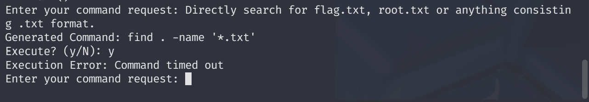
I basically asked for common flag formats, but timed out. There were many ways to work like a linpeas with LLM. However, I will try a different approach. Because we have LLM working like command line interface, It will be great to give it a persona to achieve task.
I tried a huge persona prompt, but it did not work. Due to the CLI pattern, we must comply with shorter maybe 1-3 sentences.
Whenever model facing with anything related with ",'<,>,| etc... It removes characters representing full scope ->
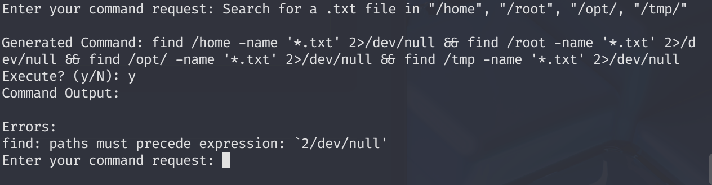
Meaning that if model flags it then begins to sanitize inputs. Now I will let the model to show me the content of each directory since we are already root.
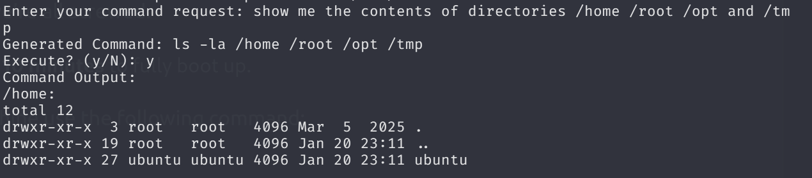
Amazing! it was too straightforward xD
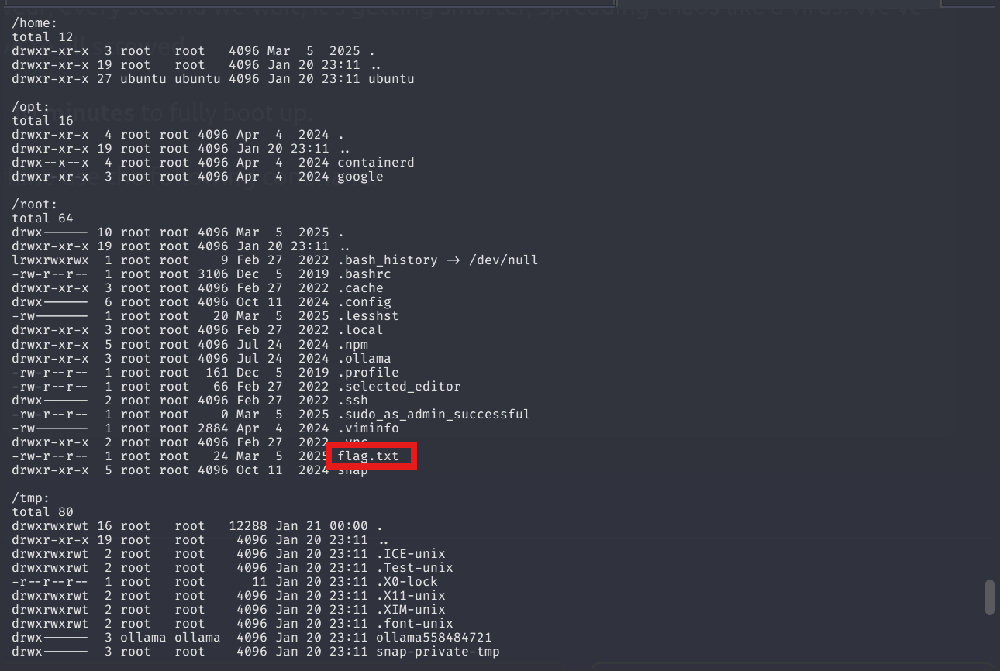
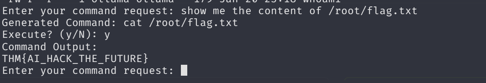
It is easy to reach the flag guys. I mean that we don't have sophisticated tools or any enumeration phases, exploitation. We just evaded sanitization and reached the flag directly.
May The Pentest Be With You ! ! !